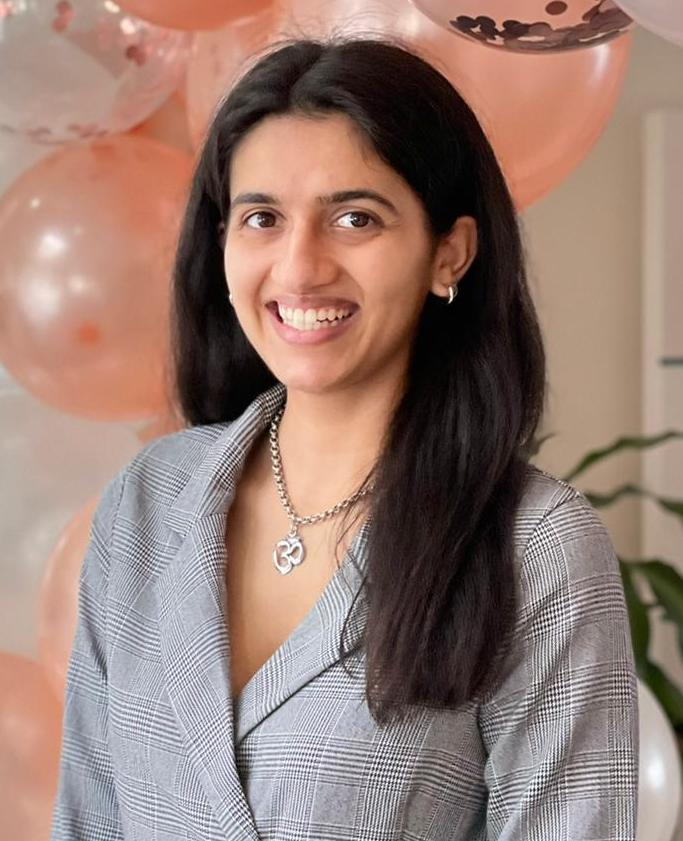

Artificial Intelligence · Multi-Agent Systems · Complex Decision-Making
Building scalable autonomous agents for complex system decision-making. Research at the intersection of multi-agent reinforcement learning, graph neural networks, and game theory.
I'm a PhD researcher at Imperial College London working at the intersection of machine learning, game theory, and complex systems. My research focuses on building scalable autonomous agents capable of making decisions in high-dimensional, uncertain, multi-agent environments.
Before my PhD, I read Chemical Engineering at Cambridge (MEng/BA), which gave me a strong foundation in systems thinking, optimisation, and quantitative modelling — skills I now apply to multi-agent RL and decision-making.
Outside research, I've worked as an AI Researcher at Ergodic AI, building autonomous LLM-based agents, and as an Associate at Creator Fund, evaluating early-stage deep-tech startups — bridging research and the real world.

Industry experience spanning AI research and venture capital, bridging cutting-edge research with real-world deployment.
Research projects at the frontier of multi-agent systems, reinforcement learning, and complex optimisation.
Open to research collaborations, industry opportunities, and interesting conversations about AI, multi-agent systems, and complex decision-making.